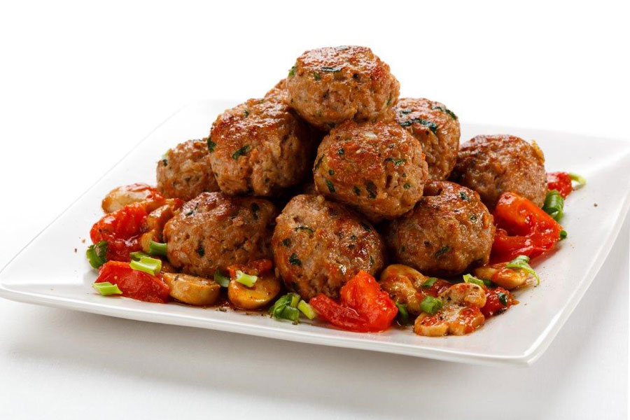

Receta de Albóndigas Caseras
Ingredientes
- 500 g de carne molida de res
- 1 huevo
- 1 taza de pan rallado
- 2 dientes de ajo picados
- 1/4 de taza de leche
- 1 cucharadita de sal
- 1/2 cucharadita de pimienta negra
- 1 cucharada de perejil fresco picado
- 1/2 cebolla picada finamente
- 2 cucharadas de aceite de oliva
- 1 taza de salsa de tomate
- 1/2 taza de caldo de pollo o agua
Instrucciones
- En un bol grande, mezcla la carne molida, el huevo, el pan rallado, el ajo, la leche, la sal, la pimienta, el perejil y la cebolla.
- Forma pequeñas bolas con la mezcla, de aproximadamente 3 cm de diámetro.
- En una sartén grande, calienta el aceite de oliva a fuego medio-alto.
- Fría las albóndigas en la sartén, dándoles vuelta hasta que estén doradas por todos lados, aproximadamente 7-10 minutos.
- Una vez doradas, agrega la salsa de tomate y el caldo de pollo. Cocina a fuego lento durante 20-25 minutos, hasta que las albóndigas estén cocidas por dentro y la salsa espese.
- Sirve las albóndigas con arroz, pasta o pan, ¡y disfruta!